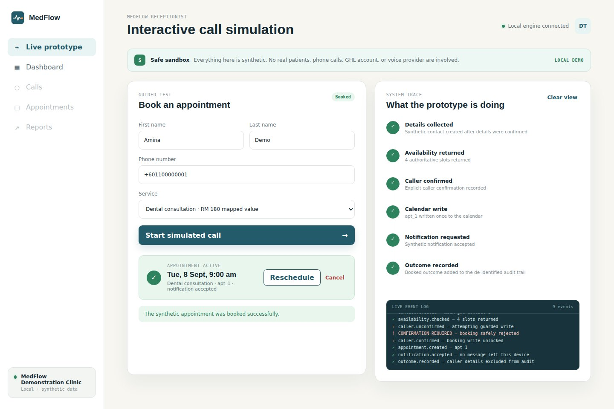
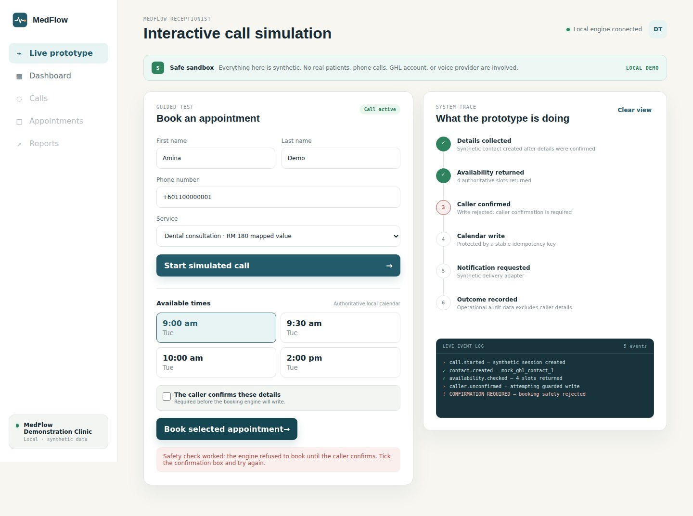

The problem
Missed calls are missed bookings
Small clinics lose appointments when nobody can pick up — during lunch, after hours, or when the front desk is busy with a patient. AI phone agents promise to fix this, but two things worried me: an agent that "books" a slot that isn't really free, and vendor reports that claim a big "revenue recovered" number nobody can check.
So I set out to build a receptionist that is safe by design and a report that is honest by design.
What I did
Scoped it, set the rules, defined the numbers
I worked as the product owner, with AI as my design and engineering team: Claude drafted the service design and dashboards, and Codex wrote and tested the code. I made the calls on scope, budget, safety rules and how results are measured, and kept a written decision register for every one.
- Wrote the MVP scope: admin tasks only — no diagnosis, no medical advice, no payment data.
- Set the rule that the AI can only offer slots the calendar has confirmed, and only books after the caller says "yes" to the details read back.
- Required a human handoff the moment a caller asks for one, or whenever the AI isn't confident.
- Set a RM500 hard cap and a staged plan for any paid vendor testing.
- Defined the reporting model below, so the dashboard can't overstate results.
The reporting model
Four numbers, never one inflated headline
Most tools collapse everything into "revenue recovered". MedFlow keeps four figures apart, because each one is known with a different level of certainty.
| Metric | What it means | How sure we are |
|---|---|---|
| Estimated opportunity | A modelled figure built from stated assumptions | Always shown with its assumptions beside it |
| Booked value | Confirmed AI bookings, priced with the clinic's own service list | Near real time; drops if a booking is cancelled |
| Attended value | Bookings where the patient actually showed up | Daily or weekly, depending on the clinic's system |
| Collected | Payment actually linked to a visit | Shown as "Not measured" if there's no payment data — never guessed |

How it works
Every step is checked and recorded
The interactive prototype runs a simulated call from start to finish. On the right, a live trace shows each step as it happens, so anyone can see exactly what the system did and why.


Results
What the prototype proves — and what it doesn't
Proven, with 29 automated tests
- No slot is offered unless the calendar returned it
- No booking without explicit confirmation
- Repeated requests don't create duplicate bookings
- Two callers can't take the same slot
- Audit logs leave out patient names and numbers
Not yet tested
- A live voice provider (Vapi and Retell shortlisted)
- A real clinic's calendar or real callers
- Malaysian and Singaporean phone networks
- Production security and compliance review
Skills shown
What this says about how I work
Source code and full project documents are available on request.